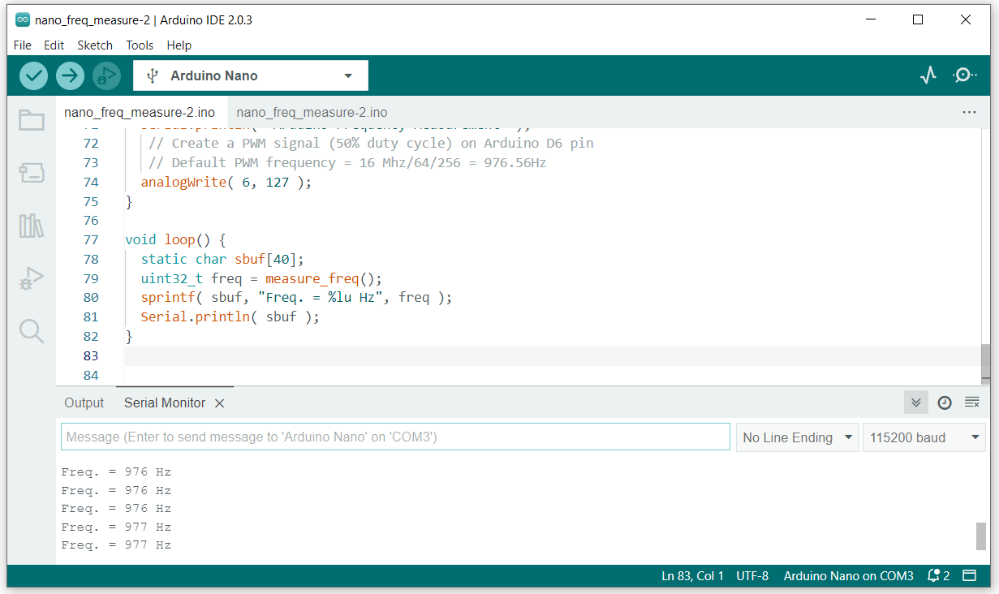

การวัดความถี่ของสัญญาณดิจิทัลแบบมีคาบด้วย Arduino - ATmega328P#
Keywords: Arduino, ATmega328P, Frequency Measurement
▷ การวัดความถี่ของสัญญาณดิจิทัลแบบมีคาบ#
บทความนี้กล่าวถึง การวัดความถี่ของสัญญาณดิจิทัลแบบมีคาบ (Frequency Measurement) โดยใช้บอร์ดไมโครคอนโทรลเลอร์ Arduino Uno / Nano
การวัดความถี่ของสัญญาณดิจิทัลแบบมีคาบ (Periodic Digital Signal) โดยใช้บอร์ดไมโครคอนโทรลเลอร์ Arduino สามารถทำได้หลายวิธี และขอกล่าวถึงสองวิธี
- วิธีแรกเป็นการวัดความกว้างของคาบ (Period) ซึ่งเป็นระยะห่างเชิงเวลาของขอบสัญญาณ เช่น เมื่อเกิดขอบขาขึ้นถัดกันสองครั้ง (Two Consecutive Rising Edges) โดยเปิดใช้งาน External Interrupt เพื่อคอยตรวจดูว่า มีขอบขาขึ้นของสัญญาณหรือไม่ และบันทึกเวลาเมื่อเกิดขอบขาขึ้นของสัญญาณแต่ละครั้ง แล้วหาผลต่างค่าเวลาทั้งสองเหตุการณ์ดังกล่าว ก็จะได้คาบเวลา ดังนั้นไมโครคอนโทรลเลอร์จะต้องมีระบบฐานเวลาที่ใช้วงจรตัวนับ (Timer/Counter) เช่น มีความละเอียดในการจับเวลา 1 ไมโครวินาที เป็นต้น การวัดความกว้างของคาบ จะทำเพียงครั้งเดียวหรือวัดค่าสำหรับหลายคาบ แล้วนำมาหาค่าเฉลี่ยก็ได้ ถ้าในช่วงเวลาดังกล่าว สัญญาณมีคาบหรือความถี่คงที่ จากนั้นเมื่อได้ความกว้างของคาบ ก็สามารถคำนวณความถี่ของสัญญาณอินพุตได้
- วิธีที่สองคือ การใช้สัญญาณที่มีคาบนั้น เป็นสัญญาณอินพุตและป้อนให้วงจรตัวนับ (Timer/Counter) ที่อยู่ภายในไมโครคอนโทรลเลอร์ แล้วนำค่าของตัวนับที่ได้ในช่วงเวลาที่กำหนดไว้ (ช่วงที่จับเวลา) มาคำนวณเป็นความถี่ได้ ระยะเวลาในการนับจะถูกกำหนดโดยวงจรตัวนับอีกตัวหนึ่งของไมโครคอนโทรลเลอร์
ในการตั้งค่าใช้งานสำหรับวงจรตัวนับที่อยู่ภายใน ATmega328P ไม่มีคำสั่งของ Arduino API ไว้ให้ใช้งาน ดังนั้นผู้ใช้จะต้องกำหนดค่าในรีจิสเตอร์ต่าง ๆ ของวงจร Timers ที่เกี่ยวข้อง ให้ถูกต้อง
ความแตกต่างระหว่าง Timer กับ Counter
- Timer เป็นวงจรตัวนับที่มีการเพิ่มค่าขึ้นด้วยอัตราคงที่ เช่น ทำงานตามจังหวะของสัญญาณ Clock ที่มีความถี่คงที่
- Counter เป็นวงจรตัวนับมีการเพิ่มค่าขึ้นอยู่กับเหตุการณ์หรือเงื่อนไขที่เกิดขึ้นตามที่ได้กำหนดไว้ เช่น นับจำนวนพัลส์ แต่ถ้าการเกิดพัลส์มีอัตราคงที่ Counter ก็จะทำงานเหมือน Timer
▷ ตัวอย่างโค้ดที่ 1#
โค้ด Arduino Sketch ต่อไปนี้ สาธิตการวัดความกว้างของคาบสัญญาณอินพุตที่ป้อนเข้าขา D2 ของ Arduino Uno / Nano ซึ่งสามารถเปิดใช้งานอินเทอร์รัพท์ภายนอกได้ที่ขาดังกล่าว
เมื่อเกิดเหตุการณ์ขอบขาขึ้นของสัญญาณอินพุตที่ขา D2 จะทำให้เกิดอินเทอร์รัพท์จากภายนอก (External Interrupt) แล้วให้ฟังก์ชัน ISR ที่เกี่ยวข้องทำหน้าที่อ่านค่าของตัวนับ Timer1 ภายในชิป ATmega328P ที่ถูกใช้เป็นตัวสร้างฐานเวลา
วงจรตัวนับ Timer1 จะถูกตั้งค่าให้มีความละเอียดในการนับ 0.5 ไมโครวินาที (μsec) ซึ่งใช้ตัวหารความถี่เท่ากับ 8 (จากความถี่ 16MHz ของ CPU ดังนั้น 16MHz/8 = 2MHz เป็นความถี่ในการนับ หรือ มีคาบเวลาเท่ากับ 0.5 usec)
ในการจับเวลาของขอบขาขึ้นแต่ละครั้ง จะต้องบันทึกเวลาสองครั้ง และมีระยะเวลาห่างกันทั้งหมดเท่ากับ 4 คาบ แล้วนำค่าที่บันทึกได้ มาคำนวณผลต่างแล้วหาร 4 และคูณด้วย 0.5 ไมโครวินาที (หรือ หารด้วย 8 เพียงครั้งเดียว) จึงจะได้เป็นคาบเวลา (เฉลี่ย) ในหน่วยเป็นไมโครวินาที
วิธีการวัดคาบเวลาหรือความถี่ในลักษณะนี้ สามารถวัดสัญญาณที่มีความถี่ไม่เกิน 100kHz (โดยประมาณ) หรือมีคาบ 10 ไมโครวินาที เนื่องจากถ้าใช้ความถี่สูงมาก ฟังก์ชัน ISR จะตอบสนองต่ออินเทอร์รัพท์ได้ไม่ทัน ค่าที่วัดจะมีความผิดพลาดสูงกว่า ในกรณีที่ใช้ความถี่ต่ำ
ในตัวอย่างนี้มีการสร้างสัญญาณ PWM โดยใช้วงจร Timer2 (มีรีจิสเตอร์ตัวนับขนาด 8 บิต) ให้เป็นเอาต์พุตที่ขา Arduino D11 / PB3 แล้วนำไปป้อนให้ขา Arduino D2 เพื่อใช้เป็นสัญญาณทดสอบ หากไม่มีแหล่งกำเนิดสัญญาณภายนอก
ในตัวอย่างนี้ วงจร Timer2 จะถูกตั้งค่าให้ทำงานในโหมด Fast PWM และตั้งค่าบิต WGM2[2:0]="111" เมื่อค่าในรีจิสเตอร์ TCNT2 มีการนับขึ้นจาก 0x00 (BOTTOM) มาได้เท่ากับค่าสูงสุดซึ่งระบุไว้ในรีจิสเตอร์ OCR2A (TOP) จะถูกรีเซตค่ากลับไปเริ่มต้นนับใหม่ และเหตุการณ์นี้เรียกว่า Compare Match
นอกจากนั้นยังได้มีการกำหนดให้ค่าบิต COM2A[1:0]="01" ซึ่งเป็นการเปิดใช้งานขาสำหรับ Output Compare Match A (OC2A) ที่ตรงกับขา PB3 และตั้งค่าให้มีการสลับค่าลอจิกที่ขาดังกล่าว (Toggle OCR2A pin) เมื่อเกิดเหตุการณ์ Compare Match
ช่วงของความถี่ของสัญญาณ PWM () ก็ขึ้นอยู่กับการตั้งค่าตัวหารความถี่ () และให้ความถี่ของซีพียู () เท่ากับ 16MHz และมีเงื่อนไข ดังนี้
ยกตัวอย่างเช่น ถ้าใช้ตัวหารความถี่เท่ากับ 8 ดังนั้น ความถี่ต่ำสุดของสัญญาณ PWM ที่เลือกใช้ได้ สามารถคำนวณได้ดังนี้
ข้อสังเกต: การทำงานของโค้ดตัวอย่างนี้ มีการปิดการทำงานของวงจร Timer0 ชั่วคราว
โดยปรกติแล้ว Arduino Sketch จะใช้ Timer0
ในการสร้างฐานเวลาของระบบที่มีการเกิดอินเทอร์รัพท์ทุก ๆ 4 ไมโครวินาที และใช้กับคำสั่ง เช่น micros()
และ millis()
#define FREQ_PIN (2) // Arduino D2 pin
#define PWM_PIN (11) // Arduino D11 pin
volatile uint16_t ovf_count = 0;
volatile uint8_t edge_count = 0;
volatile boolean done = false;
volatile uint32_t saved_ticks[2] = {0,0};
ISR(TIMER1_OVF_vect) {
ovf_count++; // Increment Timer1 overflow counter
}
// Initialize Timer1
void init_timer1() {
uint8_t SREG_tmp = SREG; // Save the status register
ovf_count = 0; // Reset overflow counter
cli(); // Disable interrupts
TIMSK1 = 0;
TCNT1 = 0; // Reset Timer1 count register
TCCR1A = 0;
TCCR1B = 0;
TIFR1 |= _BV(TOV1); // Clear Timer1 overflow flag
// Use Timer1 in Normal mode, f_CPU/8: 16MHz/8=2MHz => 0.5usec step
TIMSK1 |= (1<<TOIE1); // Enable Timer1 overflow interrupt
TCCR1B |= (1<<CS11); // Start Timer1
SREG = SREG_tmp; // Restore the status register
}
void ext_isr() { // ISR for External Interrupt
static uint32_t saved_value;
uint32_t tickcount = get_tickcount();
if (!done) {
if (edge_count==1) {
saved_ticks[0] = tickcount;
}
else if (edge_count==5) {
saved_ticks[1] = tickcount;
done = true;
}
edge_count++; // Increment the rising-edge counter
}
}
// Get the current value of Timer1 counter (with 0.5usec precision)
uint32_t get_tickcount() {
// Save the SREG register
uint8_t SREG_tmp = SREG;
// Disable global interrupt
cli();
// Read the current value of TCNT1 register of Timer1
uint16_t count_value = TCNT1;
// In normal operation the Timer/Counter Overflow Flag (TOV1)
// will be set in the same clock cycle as the TCNT1 becomes zero.
if ( TIFR1 & _BV(TOV1) ) { // Check Timer1 overflow flag
TIFR1 |= _BV(TOV1); // Clear overflow flag
++ovf_count; // Increment the overflow counter
}
// Calculate Timer1 tick count
uint32_t ticks = ovf_count;
ticks = ((ticks << 16) + count_value);
// Restore the SREG register
SREG = SREG_tmp;
return ticks;
}
void measure( uint32_t *period, uint32_t *freq ) {
// Save the current values of TCCR0A/B
uint8_t TCCR0A_tmp = TCCR0A;
uint8_t TCCR0B_tmp = TCCR0B;
uint32_t tick_diff;
// Set TCCR0A/B registers to 0 (disable Timer0)
TCCR0A = 0;
TCCR0B = 0;
edge_count = 0;
done = false;
ovf_count = 0;
// Wait until the done flag is set.
while (!done){}
tick_diff = saved_ticks[1] - saved_ticks[0];
// Restore the saved values of TCCR0A/B
TCCR0A = TCCR0A_tmp;
TCCR0B = TCCR0B_tmp;
*period = 10*tick_diff/8;
*period -= 25*(*period)/10000; // Correction
*freq = 100*1000000ul/(*period);
}
void set_timer2_prescaler( uint16_t prescaler ) {
uint8_t bits = 0; // CS[2:0] bits
switch (prescaler) {
case 1: bits = 1; break; // 0b001
case 8: bits = 2; break; // 0b010
case 32: bits = 3; break; // 0b011
case 64: bits = 4; break; // 0b100
case 128: bits = 5; break; // 0b101
case 256: bits = 6; break; // 0b110
case 1024: bits = 7; break; // 0b111
default: break; // Timer stopped
}
TCCR2B &= ~(_BV(CS22) | _BV(CS21) | _BV(CS20));
if (bits & 1) { TCCR2B |= _BV(CS20); }
if (bits & 2) { TCCR2B |= _BV(CS21); }
if (bits & 4) { TCCR2B |= _BV(CS22); }
}
void init_timer2_pwm( uint16_t prescaler, uint8_t max_value ) {
DDRB |= _BV(DDB3); // Set direction of PB3 pin to output.
// Use Fast PWM (non-inverting) with 50% duty cycle
// Enable Timer2 OC2A output for PWM
// WGM2[2:0] = "111" => BOTTOM=0, TOP=OCR2A
// COM2A[1:0] = "01" => Toggle OC2A on compare match.
TCCR2A = _BV(WGM21) | _BV(WGM20) | _BV(COM2A0);
TCCR2B = _BV(WGM22);
set_timer2_prescaler( prescaler );
OCR2A = max_value; // Set the MAX value for period
}
void setup() {
Serial.begin( 115200 );
Serial.println( "Frequency Measurement with Arduino Board" );
init_timer1();
// freq. = 16MHz/(8*10)/2 = 100kHz
// freq. = 16MHz/(8*256)/2 = 3906.Hz
// Use Timer2 to create a PWM signal, frequency of 100kHz
init_timer2_pwm( 8, 10-1 );
delay(100);
// Enable the external interrupt
attachInterrupt( digitalPinToInterrupt(FREQ_PIN),
ext_isr, RISING );
}
void loop() {
static char sbuf[40];
uint32_t period, freq;
// Measure the period and frequency of the input signal
measure( &period, &freq );
// The period value must be divided by 10.
sprintf( sbuf, "Period = %lu.%1u us, ",
period/10, period%10 );
Serial.print( sbuf );
// The frequency value must be divided by 10.
sprintf( sbuf, "Freq. = %lu.%1u Hz",
freq/10, freq%10 );
Serial.println( sbuf );
delay(1000);
}
รูป: ตัวอย่างการจำลองการทำงานของโค้ดด้วย Wokwi Simulator สำหรับความถี่ PWM เท่ากับ 100kHz (มีคาบเท่ากับ 10 ไมโครวินาที)
รูป: การแสดงสัญญาณเอาต์พุตที่มีการบันทึกได้จากการใช้ Virtual Logic Analyzer ของ Wokwi Simulator
รูป: ตัวอย่างการทดสอบกับอุปกรณ์จริง (ความถี่ของสัญญาณ PWM=100kHz)
รูป: ตัวอย่างการทดสอบกับอุปกรณ์จริง (สร้างสัญญาณภายนอกโดยใช้ Function Generator ความถี่ 125kHz)
รูป: ตัวอย่างการทดสอบกับอุปกรณ์จริง (สร้างสัญญาณภายนอกโดยใช้ Function Generator ความถี่ 50Hz)
▷ ตัวอย่างโค้ดที่ 2#
ตัวอย่างนี้สาธิตการใช้วงจร Timer1 โดยมีการใช้สัญญาณดิจิทัล-อินพุตจากภายนอกมาเป็นสัญญาณ
Clock สำหรับกำหนดจังหวะการนับของวงจรดังกล่าว และมีการเปิดใช้งานวงจร Timer2
ซึ่งทำให้เกิดอินเทอร์รัพท์ทุก ๆ 1 มิลลิวินาที เพื่อกำหนดช่วงเวลาในการนับของวงจร Timer1
เช่น กำหนดช่วงเวลาเท่ากับ 1000 มิลลิวินาที สำหรับการนับจำนวนพัลส์ที่เกิดขึ้นกับสัญญาณอินพุตของ Timer1
เมื่อได้จำนวนพัลส์ (เก็บค่าไว้ในตัวแปร pulse_count) ที่เกิดขึ้นในช่วง 1000 มิลลิวินาที
ก็จะถูกนำไปคำนวณเป็นความถี่ (หน่วยเป็น Hz)
รีจิสเตอร์ตัวนับของ Timer1 มีขนาด 16 บิต และถ้านับด้วยความถี่สูง ก็มีโอกาสที่จะเกิด
Overflow ได้ ดังนั้นจึงตัองมีการตรวจสอบและบันทึกจำนวนครั้งของเหตุการณ์ดังกล่าวที่เกิดขึ้น
(เก็บค่าไว้ในตัวแปร ovf_count)
ในตัวอย่างนี ยังได้มีการสร้างสัญญาณ PWM ที่มีเอาต์พุตออกที่ขา D6 (ใช้วงจร Timer0) โดยใช้คำสั่ง `analogWrite(...) แล้วนำไปป้อนเป็นอินพุตให้ขา D5 ในกรณีที่ไม่มีสัญญาณทดสอบจากภายนอก
#define FREQ_PIN (5) // Arduino D5 pin (T1 pin)
volatile uint16_t ovf_count = 0;
volatile uint32_t pulse_count = 0;
volatile uint16_t interval_tick_count = 0;
volatile boolean done = false;
void start_timers( uint16_t msec ) {
uint8_t SREG_tmp = SREG; // Save the SREG value
done = false;
ovf_count = 0;
interval_tick_count = msec;
cli(); // Disable global interrupt
// Disable Timer1
TCCR1A = 0; // Reset Timer1 control register A
TCCR1B = 0; // Reset Timer1 control register B
TCNT1 = 0; // Reset Timer1 counter value to 0
TIFR1 |= (1<<TOV1); // Clear Timer/Counter 1 overflow flag
TIMSK1 &= ~(1<<TOIE1); // Disable Timer1 Overflow Interrupt
// Disable Timer2
TCCR2A = 0; // Reset Timer2 control register A
TCCR2B = 0; // Reset Timer2 control register B
TCNT2 = 0; // Reset Timer2 counter value to 0
// Setup Timer2
// Set Timer2 prescaler = 128 -> 16MHz/128 = 125kHz
TCCR2B |= (1<<CS22) | (1<<CS20);
// Use Timer2 in CTC (Clear Timer on Compare Match) mode
// -> WGM22=0, WGM21=1, WGM20=0
// Note that in CTC mode the counter is automatically cleared to zero
// when the counter value (TCNT2) matches the OCR2A.
OCR2A = 125-1; // -> 16MHz/128/125 = 1kHz or 1msec timing interval
TIMSK2 |= (1<<OCIE2A); // Enable Timer2 Output Compare Match A Interrupt
// Setup Timer1 and use external clock source (rising edge) on T1 pin
// Timer1 will be used to count events on the T1 pin (Arduino D5 pin).
// It will operate in normal mode (WGM1[3:0]="0000"), no interrupt.
TCCR1B |= (1<<CS12) | (1<<CS11) | (1<<CS10); // Start Timer1
TCCR2A |= (1<<WGM21); // Start Timer2 in CTC mode
SREG = SREG_tmp; // Restore the SREG value
}
ISR(TIMER2_COMPA_vect) { // for Timer2 Output Compare Match A Interrupt
pulse_count = TCNT1;
if ( TIFR1 & (1<<TOV1) ) { // Check overflow
TIFR1 |= (1<<TOV1); // Clear Timer/Counter 1 overflow flag
ovf_count++; // Increment Timer1 overflow count
}
if (interval_tick_count-- == 0) { // Timeout
TCCR1A = 0; // Reset Timer1 control register A
TCCR1B = 0; // Reset Timer1 control register B
TCCR2A = 0; // Reset Timer2 control register A
TCCR2B = 0; // Reset Timer2 control register B
pulse_count = ((uint32_t)ovf_count << 16) + pulse_count;
done = true;
}
}
uint32_t measure() {
start_timers( 1000 /*msec*/ ); // Start Timer1/Timer2
while( !done ) {} // Wait until the done flag is set
return pulse_count; // pulses per second (Hz)
}
void setup() {
Serial.begin( 115200 );
Serial.println( "Arduino Frequency Measurement" );
// Create a PWM signal (50% duty cycle) on Arduino D6 pin
// Default PWM frequency = 16 Mhz/64/256 = 976.56Hz
analogWrite( 6, 127 );
delay(100);
}
void loop() {
static char sbuf[40];
uint32_t freq = measure();
sprintf( sbuf, "Freq. = %lu Hz", freq );
Serial.println( sbuf );
delay(10);
}
รูป: การจำลองการทำงานด้วย Wokwi Simulator
รูป: การวัดสัญญาณเอาต์พุต PWM ที่ขา D6 โดยใช้เครื่องออสซิลโลสโคป

รูป: ตัวอย่างการทดสอบกับอุปกรณ์จริง (วัดความถี่ของสัญญาณ PWM ที่ขา D6)
รูป: ตัวอย่างการวัดสัญญาณด้วย USB Logic Analyzer และแสดงผลด้วยซอฟต์แวร์ PulseView (วัดคาบได้ประมาณ 1022.67 usec และความถี่ประมาณ977.83 Hz)
▷ กล่าวสรุป#
บทความนี้ได้นำเสนอตัวอย่างโค้ด Arduino Sketch และวิธีการวัดความถี่หรือคาบของสัญญาณ โดยใช้สองวิธีที่แตกต่างกัน ซึ่งมีการเปิดใช้งานวงจรตัวนับ (Timers) ที่อยู่ภายในชิป ATmega328P และมีการสร้างสัญญาณ PWM เพื่อใช้เป็นสัญญาณทดสอบ หากไม่มีอุปกรณ์ที่สามารถสร้างสัญญาณทดสอบจากภายนอก
This work is licensed under a Creative Commons Attribution-ShareAlike 4.0 International License.
Created: 2023-04-08 | Last Revision: 2023-05-05